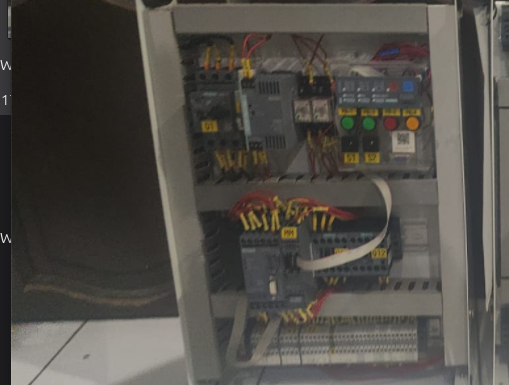

From Wiring to Intelligence: SIMOCODE-Based Motor Control Demo
Visualizing Industrial Motor Control in a Hands-On Demo ⚙️

Industrial motor control goes far beyond simply turning a motor on and off. It involves directional control, protection systems, fault detection, and real-time monitoring. This project brings those concepts into a tangible form through a forward–reverse motor control demo unit integrated with SIMOCODE.
Designed as a training and demonstration platform, the system replicates real industrial motor management, making complex concepts easier to understand and test.
🔄 Visualizing Forward–Reverse Motor Control
The system demonstrates key aspects of industrial motor control:
- Directional Control → Switching between forward and reverse using contactors
- Motor Protection → Overload and fault protection mechanisms
- Fault Detection → Identifying abnormal operating conditions
- Real-Time Monitoring → Observing system status and behavior
The integration of SIMOCODE transforms the system into an intelligent motor management platform.
🧠 Why SIMOCODE?
SIMOCODE combines multiple industrial functions into a single system:
- Motor protection (overload, current monitoring)
- Integrated control logic
- Diagnostic and fault reporting
- Communication-ready for automation systems
This makes it ideal for both industrial applications and training environments.
🛠️ My Role in the Project
I was responsible for developing the demo unit from concept to fully functional system.
📐 Electrical Design & 3D Panel Modeling
Designed wiring schematics and panel layout, and created a 3D model to ensure proper component placement and standard-compliant design.
🔧 Assembly & Wiring
Installed contactors, terminals, and protection devices, and implemented forward–reverse motor control wiring with clean and organized layout.
⚡ SIMOCODE Integration
Configured and integrated SIMOCODE to enable intelligent control, protection, and monitoring functions.
🧪 Testing, Troubleshooting & Validation
Verified system operation, tested fault conditions, and optimized performance for reliable and safe operation.
🚀 Why This Project Matters
- ✅ Demonstrates real-world motor control in a safe environment
- ✅ Combines control, protection, and monitoring in one system
- ✅ Provides hands-on training for industrial automation
- ✅ Bridges electrical design with practical implementation
🌟 Final Thoughts
This project transforms abstract industrial concepts into something tangible. By combining traditional contactor-based control with intelligent systems like SIMOCODE, it becomes more than just a demo—it’s a real representation of modern motor management systems.
In real-world applications, controlling a motor is not enough—you need to control it safely, intelligently, and reliably.